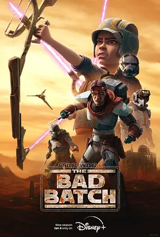

8.3
星球大战：异等小队 第二季
Star Wars: The Bad Batch Season 2
2023
美国
评分 8.3
导演:
Saul Ruiz / Brad Rau
演员:
迪·布莱德利·贝克 / 米歇尔·洪 / 本·迪斯金 / 海伦·萨德勒 / 诺希尔·达拉尔
类型:
冒险,剧情,动作
剧情简介
第二季的故事发生在卡米诺陷落之后的数月，银河系在帝国的统治下重新洗牌，而“异等小队”依旧在暗处生存。他们不再隶属于任何军队，却依旧无法脱离战士的身份，于是在不同星球之间承担各种委托任务，以维持生活，也为避开帝国的追捕寻找机会。队伍在行动中逐渐磨合，每个人的性格、技能和弱点在压力中被逼得更加鲜明，而欧米伽的成长更为这一季注入新的情感重量。随着团队穿越灰色地带，他们遇见新的盟友，例如在边境挣扎的小社区、仍然怀抱共和国理想的旧日友军，以及不愿向帝国屈服的散兵游勇。然而，潜伏在暗处的敌意同样不断扩大：帝国通过更严格的军事改革与克隆计划的替代方案，逐步锁紧整个银河的咽喉。残酷现实逼迫小队面对一个事实——他们的存在正在成为体制不容的变量。每一次任务都伴随着不确定性：有时是潜入行动，有时是护送任务，也有以往兄弟之间立场对立的危险对峙。动作场面依旧迅猛，但剧集更加注重成员之间的情感链接，他们在艰难选择里体验到忠诚、背叛、责任与牺牲的重量。帝国的阴影越压越低，使得他们的每一场胜利都带着沉重的代价。本季在战火之外加入更多关于身份与自由的思考，让“异等小队”从兵器般的存在逐渐走向真正的个体。他们在不断变动的星河中寻找能够立足的地方，也在彼此坚定的目光中找到继续前行的理由。